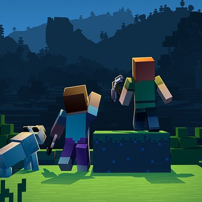

MINECRAFT PG

DESCRIPCION
Minecraft Pana Gaming es un servidor RP con mods e historia con el propósito de crear un entorno de juego amigable y divertido para aquellas personas que juegan por pasarlo bien.
No evaluamos el nivel de experiencia en el juego sino el comportamiento de los usuarios y como rolean.
Historia y Lore:
La historia del lore tiene relacion con los personajes del server, es decir, van sucediendo cosas imprevistas dependiendo de pendiendo de la historia de los personajes principales del la historia y está dividido por temporadas.
CATEGORIA
Visita nuestra categoria para saber mas del lo que hacemos.
PERSONAJES

En este apartado podrás aprender a crear tu propio personaje y los pasos a realizar para que puedas dar a luz tu imaginación.
VER CONTENIDO
HISTORIA

Conoce todo el lore y la historia de Minecraft Pana Gaming. Esta historia recibe con el tiempo revelaciones y actualizaciones increibles que se sentiras en el cine.
VER CONTENIDO